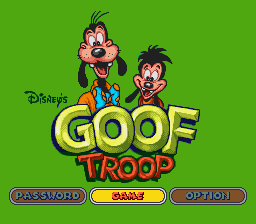

UMA AVENTURA A UM TOQUE DE DISTÂNCIA
Seu cartucho. Sua aventura.
BRASA PLAY16-BIT SYSTEM

APERTE START PARA COMEÇAR
POWERGOOF TROOP / 001
Goof Troop · toque em START GAME para jogar
01Toque & jogue
O NFC abre esta página.
O START abre a aventura.
02Do seu jeito
Controles na tela ou um
gamepad conectado ao celular.
03Continue depois
Use salvar e carregar estado
no menu do emulador.
Como jogar
No celular: abra no Safari ou Chrome e toque em START GAME. O jogo carrega diretamente. Vire a tela para jogar com mais espaço. O primeiro carregamento precisa de internet.
Com controle: conecte pelo Bluetooth do celular antes de iniciar. Ajuste o mapeamento no menu do emulador. Dois jogadores precisam de dois controles e configuração de cada jogador.
Progresso: use “Salvar estado” e “Carregar estado” no menu. Guarde o arquivo de estado baixado para continuar depois.